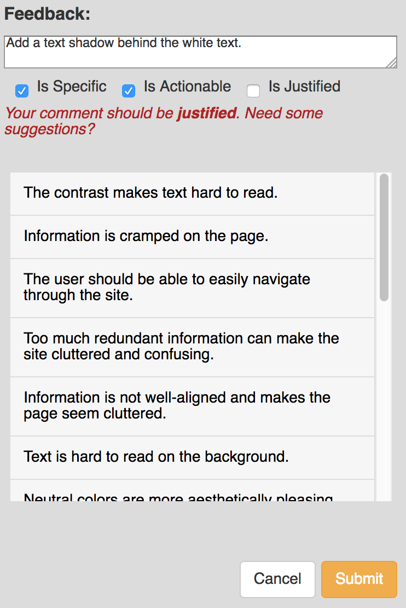

CritiqueKit provides you with real-time categorization and feedback suggestions to help you give better feedback. To start, begin typing your feedback in the textbox.
The checkboxes below the textbox automatically categorize your feedback into the characteristics of Specific, Actionable, and Justified as you type. Your goal is to make sure your feedback fits all three categories for the most helpful and complete feedback. You can hover over each checkbox to learn more about what each characteristic means.
If you need help or want some ideas from what others have previously said, you can select the suggestions in the suggestions box, which will directly copy to the textbox, where you can continue editing. These suggestions update with the categories to help you give complete feedback.
Once your feedback fits all the characteristics, CritiqueKit will tell you your feedback is complete, and the Submit button at the bottom of the page will turn green. Submit your comment, and move on to the next one or click the "I'm done!" button at the top of the page to finish giving feedback.